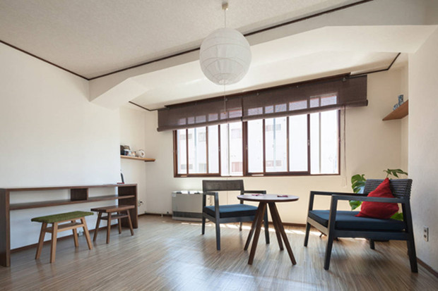
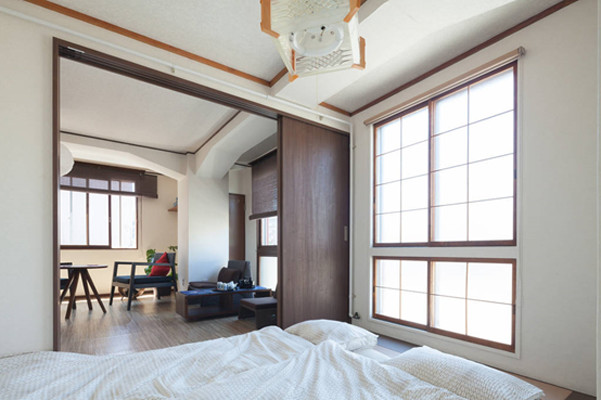

等12位好友去过
2015年12月14日

北海道大概能满足每个人对冬天的幻想。粉末一样的雪，可以任性地躺倒，就像栽进棉被中一样，更别提还能在玩完雪之后舒服地泡个温泉。但是对于真正的吃货们来说，美食才是札幌最吸引人之处。我们为你盘点了4个与美食毗邻、各具风格的精致日式民居，给你一个绝不辜负味蕾的札幌之旅。
第一个让人不假思索就脱口而出的北海道美食当然是鼎鼎大名的札幌拉面啦！大概是因为天寒地冻的气候，札幌的拉面有着日式饮食中少见的重油重辣，冰天雪地中来一碗，整个人都暖和舒畅了。这份热腾腾的生活气息，与日式内敛、极简的美学和含蓄、克制的生活方式，恰好达成了一份微妙的平衡。
这家距离札幌车站旁的“拉面共和国”不远的民宿，有着干净明亮的房间与质感极佳的家具器皿。热爱旅行的房东用绿色生活理念来打理这个房间，“SabiSabi的家具，Hasami Yaki餐具，今治毛巾……”房东Kumiko和Miri认为，有质感的细节才能提供更好的生活感受。 恰到好处的留白给了这个房间最大可能的空间，无论是有着榻榻米的和室，还是阳光充沛的超大客厅，处处体现着有着温馨生活气息的日式极简美学。
虽然听起来蛮有异国情调，成吉思汗烤肉实际上却是货真价实的北海道当地美食。腌制过的羊肉、洋葱、豆芽、卷心菜、南瓜在铁板上烧烤得滋滋作响，趁热蘸着特别调制的酱料，每一口都是大满足。再配上一杯冰凉的啤酒，这种大口吃肉大口喝酒的畅快真是不可多得。
下一篇

made with heart,2016 Travel With Heart,a project by Mockingbirds.